<DOCUMENT>
<TYPE>EX-99.2
<SEQUENCE>3
<FILENAME>d240605dex992.htm
<DESCRIPTION>EX-99.2
<TEXT>
<HTML><HEAD>
<TITLE>EX-99.2</TITLE>
</HEAD>
 <BODY BGCOLOR="WHITE">

<Center><DIV STYLE="width:8.5in" align="left">
 <P STYLE="margin-top:0pt; margin-bottom:0pt; font-size:10pt; font-family:Times New Roman" ALIGN="right"><B>Exhibit 99.2 </B></P> <P STYLE="font-size:12pt;margin-top:0pt;margin-bottom:0pt">&nbsp;</P>
<P STYLE="margin-top:0pt;margin-bottom:0pt" ALIGN="center">


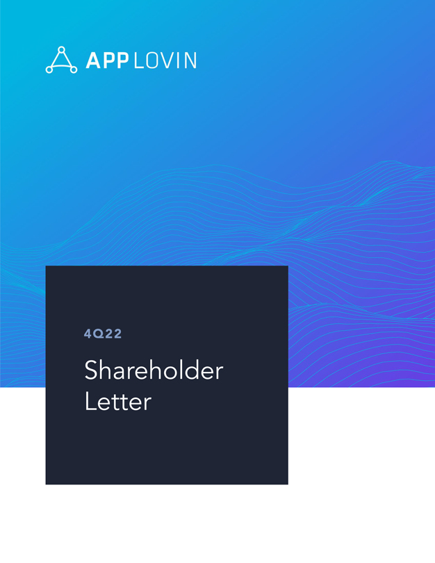
 </P> <P STYLE="font-family:Times New Roman; font-size:0.5pt"><FONT COLOR="#FFFFFF">APPLOVIN 4Q22 Shareholder Letter </FONT></P>
</DIV></Center>


<p style="margin-top:1em; margin-bottom:0em; page-break-before:always">
<HR SIZE="3" style="COLOR:#999999" WIDTH="100%" ALIGN="CENTER">

<Center><DIV STYLE="width:8.5in" align="left">
 <P STYLE="margin-top:0pt;margin-bottom:0pt" ALIGN="center">


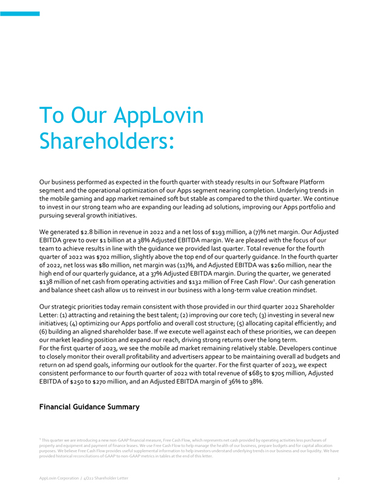
 </P> <P STYLE="font-family:Times New Roman; font-size:0.5pt"><FONT COLOR="#FFFFFF">To Our AppLovin Shareholders: Our business performed as expected in the fourth quarter with steady results in our Software Platform
segment and the operational optimization of our Apps segment nearing completion. Underlying trends in the mobile gaming and app market remained soft but stable as compared to the third quarter. We continue to invest in our strong team who are
expanding our leading ad solutions, improving our Apps portfolio and pursuing several growth initiatives. We generated $2.8 billion in revenue in 2022 and a net loss of $193&nbsp;million, a (7)% net margin. Our Adjusted EBITDA grew to over $1
billion at a 38% Adjusted EBITDA margin. We are pleased with the focus of our team to achieve results in line with the guidance we provided last quarter. Total revenue for the fourth quarter of 2022 was $702 million, slightly above the top end of
our quarterly guidance. In the fourth quarter of 2022, net loss was $80 million, net margin was (11)%, and Adjusted EBITDA was $260&nbsp;million, near the high end of our quarterly guidance, at a 37% Adjusted EBITDA margin. During the quarter, we
generated $138 million of net cash from operating activities and $132 million of Free Cash Flow1 Our cash generation and balance sheet cash allow us to reinvest in our business with a long-term value creation mindset. Our strategic priorities today
remain consistent with those provided in our third quarter 2022 Shareholder Letter: (1) attracting and retaining the best talent; (2) improving our core tech; (3) investing in several new initiatives; (4) optimizing our Apps portfolio and overall
cost structure; (5) allocating capital efficiently; and (6) building an aligned shareholder base. If we execute well against each of these priorities, we can deepen our market leading position and expand our reach, driving strong returns over the
long term. For the first quarter of 2023, we see the mobile ad market remaining relatively stable. Developers continue to closely monitor their overall profitability and advertisers appear to be maintaining overall ad budgets and return on ad spend
goals, informing our outlook for the quarter. For the first quarter of 2023, we expect consistent performance to our fourth quarter of 2022 with total revenue of $685 to $705 million, Adjusted EBITDA of $250 to $270 million, and an Adjusted EBITDA
margin of 36% to 38%. Financial Guidance Summary 1 This quarter we are introducing a new non-GAAP financial measure, Free Cash Flow, which represents net cash provided by operating activities less purchases of property and equipment and payment of
finance leases. We use Free Cash Flow to help manage the health of our business, prepare budgets and for capital allocation purposes. We believe Free Cash Flow provides useful supplemental information to help investors understand underlying trends
in our business and our liquidity. We have provided historical reconciliations of GAAP to non-GAAP metrics in tables at the end of this letter.AppLovin Corporation / 4Q22 Shareholder Letter 2 </FONT></P>
</DIV></Center>


<p style="margin-top:1em; margin-bottom:0em; page-break-before:always">
<HR SIZE="3" style="COLOR:#999999" WIDTH="100%" ALIGN="CENTER">

<Center><DIV STYLE="width:8.5in" align="left">
 <P STYLE="margin-top:0pt;margin-bottom:0pt" ALIGN="center">


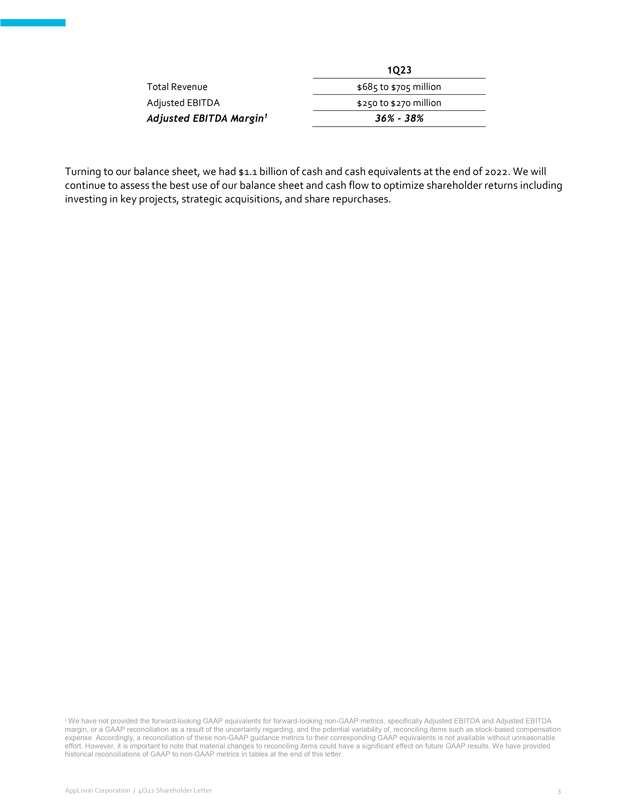
 </P> <P STYLE="font-family:Times New Roman; font-size:0.5pt"><FONT COLOR="#FFFFFF">1Q23 Total Revenue $685 to $705 million Adjusted EBITDA $250 to $270 million Adjusted EBITDA Margin1 36% - 38% Turning to our balance
sheet, we had $1.1 billion of cash and cash equivalents at the end of 2022. We will continue to assess the best use of our balance sheet and cash flow to optimize shareholder returns including investing in key projects, strategic acquisitions, and
share repurchases. 1 We have not provided the forward-looking GAAP equivalents for forward-looking non-GAAP metrics, specifically Adjusted EBITDA and Adjusted EBITDA margin, or a GAAP reconciliation as a result of the uncertainty regarding, and the
potential variability of, reconciling items such as stock-based compensation expense. Accordingly, a reconciliation of these non-GAAP guidance metrics to their corresponding GAAP equivalents is not available without unreasonable effort. However, it
is important to note that material changes to reconciling items could have a significant effect on future GAAP results. We have provided historical reconciliations of GAAP to non-GAAP metrics in tables at the end of this letter. AppLovin Corporation
/ 4Q22 Shareholder Letter 3 </FONT></P>
</DIV></Center>


<p style="margin-top:1em; margin-bottom:0em; page-break-before:always">
<HR SIZE="3" style="COLOR:#999999" WIDTH="100%" ALIGN="CENTER">

<Center><DIV STYLE="width:8.5in" align="left">
 <P STYLE="margin-top:0pt;margin-bottom:0pt" ALIGN="center">


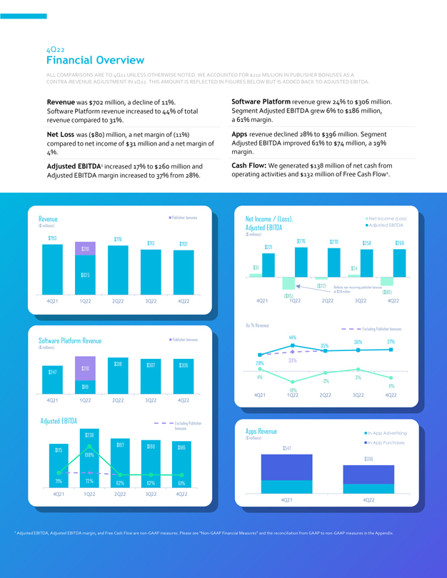
 </P> <P STYLE="font-family:Times New Roman; font-size:0.5pt"><FONT COLOR="#FFFFFF">4Q22 Financial Overview ALL COMPARISONS ARE TO 4Q21 UNLESS OTHERWISE NOTED. WE ACCOUNTED FOR $210 MILLION IN PUBLISHER BONUSES AS A
CONTRA-REVENUE ADJUSTMENT IN 1Q22. THIS AMOUNT IS REFLECTED IN FIGURES BELOW BUT IS ADDED BACK TO ADJUSTED EBITDA. Revenue was $702 million, a decline of 11%. Software Platform revenue increased to 44% of total revenue compared to 31%. Net Loss was
($80) million, a net margin of (11%) compared to net income of $31 million and a net margin of 4%. Adjusted EBITDA1 increased 17% to $260 million and Adjusted EBITDA margin increased to 37% from 28%. Software Platform revenue grew 24% to $306
million. Segment Adjusted EBITDA grew 6% to $186 million, a 61% margin. Apps revenue declined 28% to $396 million. Segment Adjusted EBITDA improved 61% to $74 million, a 19% margin. Cash Flow: We generated $138 million of net cash from operating
activities and $132 million of Free Cash Flow1. Revenue ($ millions) Publisher bonuses $793 $210 $625 $776 $713 $702 4Q21 1Q22 2Q22 3Q22 4Q22 Software Platform Revenue ($ millions) Publisher bonuses $247 $210 $119 $318 $307 $306 4Q21 1Q22 2Q22 3Q22
4Q22 Adjusted EBITDA Excluding Publisher bonuses $175 71% $236 198% 72% $197 62% $190 62% $186 61% 4Q21 1Q22 2Q22 3Q22 4Q22 Net Income / (Loss), Adjusted EBITDA ($&nbsp;millions) Net Income / (Loss) Adjusted EBITDA $31 $221 $276 $270 $24 $258 $260
($115) ($22)&nbsp;($80) Reflects non-recurring publisher bonuses of $210 million 4Q21 1Q22 2Q22 3Q22 4Q22 As % Revenue Excluding Publisher bonuses 44% 35% 36% 37% 28% 33% 4% -18% -3% 3% -11% 4Q21 1Q22 2Q22 3Q22 4Q22 Apps Revenue ($ millions) $547
4Q21 In-App Advertising In-App Purchases $396 4Q22 1 Adjusted EBITDA, Adjusted EBITDA margin, and Free Cash Flow are non-GAAP measures. Please see &#147;Non-GAAP Financial Measures&#148; and the reconciliation from GAAP to non-GAAP measures in the
Appendix. </FONT></P>
</DIV></Center>


<p style="margin-top:1em; margin-bottom:0em; page-break-before:always">
<HR SIZE="3" style="COLOR:#999999" WIDTH="100%" ALIGN="CENTER">

<Center><DIV STYLE="width:8.5in" align="left">
 <P STYLE="margin-top:0pt;margin-bottom:0pt" ALIGN="center">


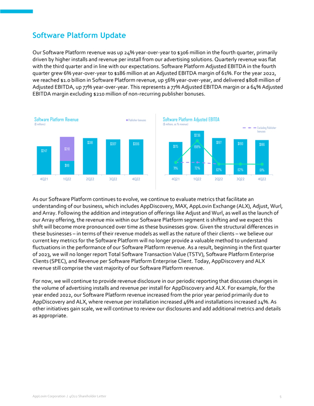
 </P> <P STYLE="font-family:Times New Roman; font-size:0.5pt"><FONT COLOR="#FFFFFF">Software Platform Update Our Software Platform revenue was up 24% year-over-year to $306&nbsp;million in the fourth quarter, primarily
driven by higher installs and revenue per install from our advertising solutions. Quarterly revenue was flat with the third quarter and in line with our expectations. Software Platform Adjusted EBITDA in the fourth quarter grew 6% year-over-year to
$186&nbsp;million at an Adjusted EBITDA margin of 61%. For the year 2022, we reached $1.0&nbsp;billion in Software Platform revenue, up 56% year-over-year, and delivered $808&nbsp;million of Adjusted EBITDA, up 77% year-over-year. This represents a
77% Adjusted EBITDA margin or a 64% Adjusted EBITDA margin excluding $210&nbsp;million of <FONT STYLE="white-space:nowrap">non-recurring</FONT> publisher bonuses. Software Platform Revenue ($ millions) Publisher bonuses $247 $210 $ 119 $318 $307
$306 4Q21 1Q22 2Q22 3Q22 4Q22 Software Platform Adjusted EBITDA ($ millions, as % revenue) Excluding Publisher bonuses $175 71% $236 198% 72% $197 62% $190 62% $186 61% 4Q21 1Q22 2Q22 3Q22 4Q22 As our Software Platform continues to evolve, we
continue to evaluate metrics that facilitate an understanding of our business, which includes AppDiscovery, MAX, AppLovin Exchange (ALX), Adjust, Wurl, and Array. Following the addition and integration of offerings like Adjust and Wurl, as well as
the launch of our Array offering, the revenue mix within our Software Platform segment is shifting and we expect this shift will become more pronounced over time as these businesses grow. Given the structural differences in these businesses &#150;
in terms of their revenue models as well as the nature of their clients &#150; we believe our current key metrics for the Software Platform will no longer provide a valuable method to understand fluctuations in the performance of our Software
Platform revenue. As a result, beginning in the first quarter of 2023, we will no longer report Total Software Transaction Value (TSTV), Software Platform Enterprise Clients (SPEC), and Revenue per Software Platform Enterprise Client. Today,
AppDiscovery and ALX revenue still comprise the vast majority of our Software Platform revenue. For now, we will continue to provide revenue disclosure in our periodic reporting that discusses changes in the volume of advertising installs and
revenue per install for AppDiscovery and ALX. For example, for the year ended 2022, our Software Platform revenue increased from the prior year period primarily due to AppDiscovery and ALX, where revenue per installation increased 46% and
installations increased 24%. As other initiatives gain scale, we will continue to review our disclosures and add additional metrics and details as appropriate. AppLovin Corporation / 4Q22 Shareholder Letter 5 </FONT></P>
</DIV></Center>


<p style="margin-top:1em; margin-bottom:0em; page-break-before:always">
<HR SIZE="3" style="COLOR:#999999" WIDTH="100%" ALIGN="CENTER">

<Center><DIV STYLE="width:8.5in" align="left">
 <P STYLE="margin-top:0pt;margin-bottom:0pt" ALIGN="center">


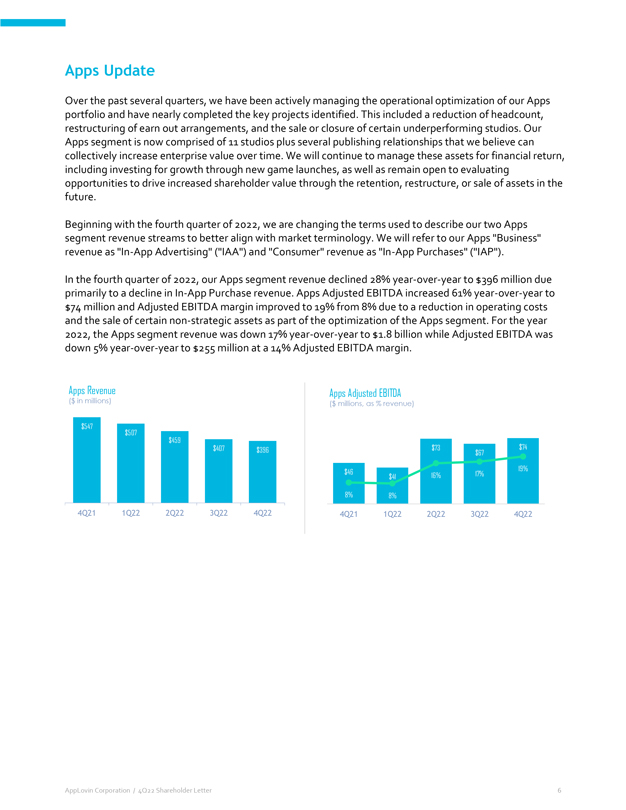
 </P> <P STYLE="font-family:Times New Roman; font-size:0.5pt"><FONT COLOR="#FFFFFF">Apps Update Over the past several quarters, we have been actively managing the operational optimization of our Apps portfolio and have
nearly completed the key projects identified. This included a reduction of headcount, restructuring of earn out arrangements, and the sale or closure of certain underperforming studios. Our Apps segment is now comprised of 11 studios plus several
publishing relationships that we believe can collectively increase enterprise value over time. We will continue to manage these assets for financial return, including investing for growth through new game launches, as well as remain open to
evaluating opportunities to drive increased shareholder value through the retention, restructure, or sale of assets in the future. Beginning with the fourth quarter of 2022, we are changing the terms used to describe our two Apps segment revenue
streams to better align with market terminology. We will refer to our Apps &#147;Business&#148; revenue as <FONT STYLE="white-space:nowrap">&#147;In-App</FONT> Advertising&#148; (&#147;IAA&#148;) and &#147;Consumer&#148; revenue as <FONT
STYLE="white-space:nowrap">&#147;In-App</FONT> Purchases&#148; (&#147;IAP&#148;). In the fourth quarter of 2022, our Apps segment revenue declined 28% year-over-year to $396&nbsp;million due primarily to a decline in
<FONT STYLE="white-space:nowrap">In-App</FONT> Purchase revenue. Apps Adjusted EBITDA increased 61% year-over-year to $74&nbsp;million and Adjusted EBITDA margin improved to 19% from 8% due to a reduction in operating costs and the sale of certain <FONT
STYLE="white-space:nowrap">non-strategic</FONT> assets as part of the optimization of the Apps segment. For the year 2022, the Apps segment revenue was down 17% year-over-year to $1.8&nbsp;billion while Adjusted EBITDA was down 5% year-over-year to
$255&nbsp;million at a 14% Adjusted EBITDA margin. Apps Revenue ($ in millions) $547 $507 $459 $407 $396 4Q21 1Q22 2Q22 3Q22 4Q22 Apps Adjusted EBITDA ($ millions, as % revenue) $46 8% $41 8% $73 16% $67 17% $74 19% 4Q21 1Q22 2Q22 3Q22 4Q22 AppLovin
Corporation / 4Q22 Shareholder Letter 6 </FONT></P>
</DIV></Center>


<p style="margin-top:1em; margin-bottom:0em; page-break-before:always">
<HR SIZE="3" style="COLOR:#999999" WIDTH="100%" ALIGN="CENTER">

<Center><DIV STYLE="width:8.5in" align="left">
 <P STYLE="margin-top:0pt;margin-bottom:0pt" ALIGN="center">


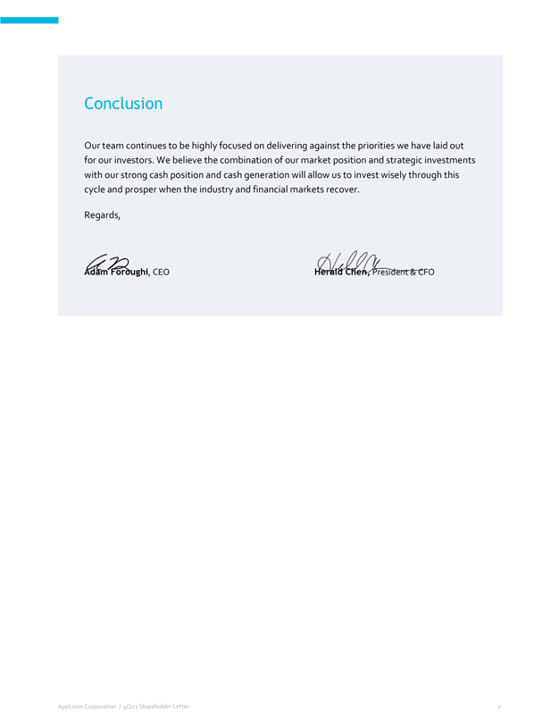
 </P> <P STYLE="font-family:Times New Roman; font-size:0.5pt"><FONT COLOR="#FFFFFF">Conclusion Our team continues to be highly focused on delivering against the priorities we have laid out for our investors. We believe
the combination of our market position and strategic investments with our strong cash position and cash generation will allow us to invest wisely through this cycle and prosper when the industry and financial markets recover. Regards, Adam Foroughi,
CEO Herald Chen, President&nbsp;&amp; CFO AppLovin Corporation / 4Q22 Shareholder Letter 7 </FONT></P>
</DIV></Center>


<p style="margin-top:1em; margin-bottom:0em; page-break-before:always">
<HR SIZE="3" style="COLOR:#999999" WIDTH="100%" ALIGN="CENTER">

<Center><DIV STYLE="width:8.5in" align="left">
 <P STYLE="margin-top:0pt;margin-bottom:0pt" ALIGN="center">


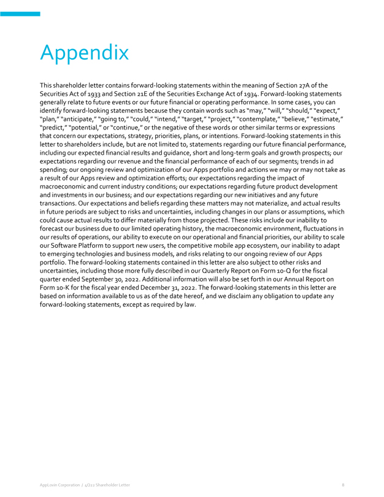
 </P> <P STYLE="font-family:Times New Roman; font-size:0.5pt"><FONT COLOR="#FFFFFF">Appendix This shareholder letter contains forward-looking statements within the meaning of Section&nbsp;27A of the Securities Act of
1933 and Section&nbsp;21E of the Securities Exchange Act of 1934. Forward-looking statements generally relate to future events or our future financial or operating performance. In some cases, you can identify forward-looking statements because they
contain words such as &#147;may,&#148; &#147;will,&#148; &#147;should,&#148; &#147;expect,&#148; &#147;plan,&#148; &#147;anticipate,&#148; &#147;going to,&#148; &#147;could,&#148; &#147;intend,&#148; &#147;target,&#148; &#147;project,&#148;
&#147;contemplate,&#148; &#147;believe,&#148; &#147;estimate,&#148; &#147;predict,&#148; &#147;potential,&#148; or &#147;continue,&#148; or the negative of these words or other similar terms or expressions that concern our expectations, strategy,
priorities, plans, or intentions. Forward-looking statements in this letter to shareholders include, but are not limited to, statements regarding our future financial performance, including our expected financial results and guidance, short and
long-term goals and growth prospects; our expectations regarding our revenue and the financial performance of each of our segments; trends in ad spending; our ongoing review and optimization of our Apps portfolio and actions we may or may not take
as a result of our Apps review and optimization efforts; our expectations regarding the impact of macroeconomic and current industry conditions; our expectations regarding future product development and investments in our business; and our
expectations regarding our new initiatives and any future transactions. Our expectations and beliefs regarding these matters may not materialize, and actual results in future periods are subject to risks and uncertainties, including changes in our
plans or assumptions, which could cause actual results to differ materially from those projected. These risks include our inability to forecast our business due to our limited operating history, the macroeconomic environment, fluctuations in our
results of operations, our ability to execute on our operational and financial priorities, our ability to scale our Software Platform to support new users, the competitive mobile app ecosystem, our inability to adapt to emerging technologies and
business models, and risks relating to our ongoing review of our Apps portfolio. The forward-looking statements contained in this letter are also subject to other risks and uncertainties, including those more fully described in our Quarterly Report
on Form <FONT STYLE="white-space:nowrap">10-Q</FONT> for the fiscal quarter ended September&nbsp;30, 2022. Additional information will also be set forth in our Annual Report on Form <FONT STYLE="white-space:nowrap">10-K</FONT> for the fiscal year
ended December&nbsp;31, 2022. The forward-looking statements in this letter are based on information available to us as of the date hereof, and we disclaim any obligation to update any forward-looking statements, except as required by law. AppLovin
Corporation / 4Q22 Shareholder Letter 8 </FONT></P>
</DIV></Center>


<p style="margin-top:1em; margin-bottom:0em; page-break-before:always">
<HR SIZE="3" style="COLOR:#999999" WIDTH="100%" ALIGN="CENTER">

<Center><DIV STYLE="width:8.5in" align="left">
 <P STYLE="margin-top:0pt;margin-bottom:0pt" ALIGN="center">


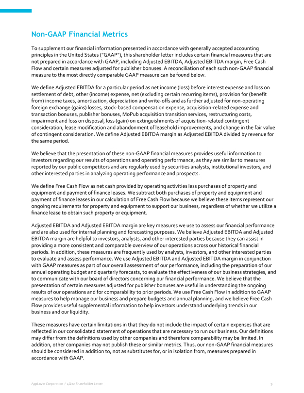
 </P> <P STYLE="font-family:Times New Roman; font-size:0.5pt"><FONT COLOR="#FFFFFF"><FONT STYLE="white-space:nowrap">Non-GAAP</FONT> Financial Metrics To supplement our financial information presented in accordance with
generally accepted accounting principles in the United States (&#147;GAAP&#148;), this shareholder letter includes certain financial measures that are not prepared in accordance with GAAP, including Adjusted EBITDA, Adjusted EBITDA margin, Free Cash
Flow and certain measures adjusted for publisher bonuses. A reconciliation of each such <FONT STYLE="white-space:nowrap">non-GAAP</FONT> financial measure to the most directly comparable GAAP measure can be found below. We define Adjusted EBITDA for
a particular period as net income (loss) before interest expense and loss on settlement of debt, other (income) expense, net (excluding certain recurring items), provision for (benefit from) income taxes, amortization, depreciation and write-offs
and as further adjusted for <FONT STYLE="white-space:nowrap">non-operating</FONT> foreign exchange (gains) losses, stock-based compensation expense, acquisition-related expense and transaction bonuses, publisher bonuses, MoPub acquisition transition
services, restructuring costs, impairment and loss on disposal, loss (gain) on extinguishments of acquisition-related contingent consideration, lease modification and abandonment of leasehold improvements, and change in the fair value of contingent
consideration. We define Adjusted EBITDA margin as Adjusted EBITDA divided by revenue for the same period. We believe that the presentation of these <FONT STYLE="white-space:nowrap">non-GAAP</FONT> financial measures provides useful information to
investors regarding our results of operations and operating performance, as they are similar to measures reported by our public competitors and are regularly used by securities analysts, institutional investors, and other interested parties in
analyzing operating performance and prospects. We define Free Cash Flow as net cash provided by operating activities less purchases of property and equipment and payment of finance leases. We subtract both purchases of property and equipment and
payment of finance leases in our calculation of Free Cash Flow because we believe these items represent our ongoing requirements for property and equipment to support our business, regardless of whether we utilize a finance lease to obtain such
property or equipment. Adjusted EBITDA and Adjusted EBITDA margin are key measures we use to assess our financial performance and are also used for internal planning and forecasting purposes. We believe Adjusted EBITDA and Adjusted EBITDA margin are
helpful to investors, analysts, and other interested parties because they can assist in providing a more consistent and comparable overview of our operations across our historical financial periods. In addition, these measures are frequently used by
analysts, investors, and other interested parties to evaluate and assess performance. We use Adjusted EBITDA and Adjusted EBITDA margin in conjunction with GAAP measures as part of our overall assessment of our performance, including the preparation
of our annual operating budget and quarterly forecasts, to evaluate the effectiveness of our business strategies, and to communicate with our board of directors concerning our financial performance. We believe that the presentation of certain
measures adjusted for publisher bonuses are useful in understanding the ongoing results of our operations and for comparability to prior periods. We use Free Cash Flow in addition to GAAP measures to help manage our business and prepare budgets and
annual planning, and we believe Free Cash Flow provides useful supplemental information to help investors understand underlying trends in our business and our liquidity. These measures have certain limitations in that they do not include the impact
of certain expenses that are reflected in our consolidated statement of operations that are necessary to run our business. Our definitions may differ from the definitions used by other companies and therefore comparability may be limited. In
addition, other companies may not publish these or similar metrics. Thus, our <FONT STYLE="white-space:nowrap">non-GAAP</FONT> financial measures should be considered in addition to, not as substitutes for, or in isolation from, measures prepared in
accordance with GAAP. AppLovin Corporation / 4Q22 Shareholder Letter 9 </FONT></P>
</DIV></Center>


<p style="margin-top:1em; margin-bottom:0em; page-break-before:always">
<HR SIZE="3" style="COLOR:#999999" WIDTH="100%" ALIGN="CENTER">

<Center><DIV STYLE="width:8.5in" align="left">
 <P STYLE="margin-top:0pt;margin-bottom:0pt" ALIGN="center">


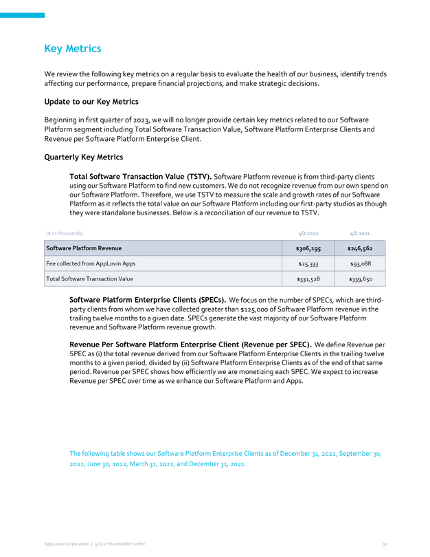
 </P> <P STYLE="font-family:Times New Roman; font-size:0.5pt"><FONT COLOR="#FFFFFF">Key Metrics We review the following key metrics on a regular basis to evaluate the health of our business, identify trends affecting our
performance, prepare financial projections, and make strategic decisions. Update to our Key Metrics Beginning in first quarter of 2023, we will no longer provide certain key metrics related to our Software Platform segment including Total Software
Transaction Value, Software Platform Enterprise Clients and Revenue per Software Platform Enterprise Client. Quarterly Key Metrics Total Software Transaction Value (TSTV). Software Platform revenue is from third-party clients using our Software
Platform to find new customers. We do not recognize revenue from our own spend on our Software Platform. Therefore, we use TSTV to measure the scale and growth rates of our Software Platform as it reflects the total value on our Software Platform
including our first-party studios as though they were standalone businesses. Below is a reconciliation of our revenue to TSTV. ($ in thousands) 4Q 2022 4Q 2021 Software Platform Revenue $306,195 $246,562 Fee collected from AppLovin Apps $25,333
$93,088 Total Software Transaction Value $331,528 $339,650 Software Platform Enterprise Clients (SPECs). We focus on the number of SPECs, which are third-party clients from whom we have collected greater than $125,000 of Software Platform revenue in
the trailing twelve months to a given date. SPECs generate the vast majority of our Software Platform revenue and Software Platform revenue growth. Revenue Per Software Platform Enterprise Client (Revenue per SPEC). We define Revenue per SPEC as
(i)&nbsp;the total revenue derived from our Software Platform Enterprise Clients in the trailing twelve months to a given period, divided by (ii)&nbsp;Software Platform Enterprise Clients as of the end of that same period. Revenue per SPEC shows how
efficiently we are monetizing each SPEC. We expect to increase Revenue per SPEC over time as we enhance our Software Platform and Apps.The following table shows our Software Platform Enterprise Clients as of December&nbsp;31, 2022,
September&nbsp;30, 2022, June&nbsp;30, 2022, March&nbsp;31, 2022, and December&nbsp;31, 2021. AppLovin Corporation / 4Q22 Shareholder Letter 10 </FONT></P>
</DIV></Center>


<p style="margin-top:1em; margin-bottom:0em; page-break-before:always">
<HR SIZE="3" style="COLOR:#999999" WIDTH="100%" ALIGN="CENTER">

<Center><DIV STYLE="width:8.5in" align="left">
 <P STYLE="margin-top:0pt;margin-bottom:0pt" ALIGN="center">


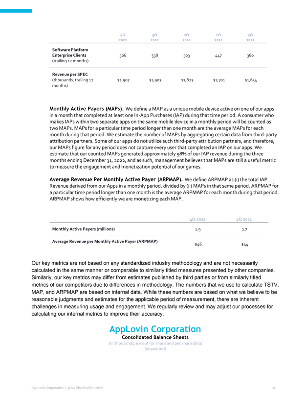
 </P> <P STYLE="font-family:Times New Roman; font-size:0.5pt"><FONT COLOR="#FFFFFF">4Q 3Q 2Q 1Q 4Q 2022 2022 2022 2021 2021 Software Platform Enterprise Clients 566 538 503 447 380 (trailing 12 months) Revenue per SPEC
(thousands, trailing 12 $1,907 $1,903 $1,823 $1,701 $1,634 months) Monthly Active Payers (MAPs). We define a MAP as a unique mobile device active on one of our apps in a month that completed at least one
<FONT STYLE="white-space:nowrap">In-App</FONT> Purchases (IAP) during that time period. A consumer who makes IAPs within two separate apps on the same mobile device in a monthly period will be counted as two MAPs. MAPs for a particular time period
longer than one month are the average MAPs for each month during that period. We estimate the number of MAPs by aggregating certain data from third-party attribution partners. Some of our apps do not utilize such third-party attribution partners,
and therefore, our MAPs figure for any period does not capture every user that completed an IAP on our apps. We estimate that our counted MAPs generated approximately 98% of our IAP revenue during the three months ending December&nbsp;31, 2022, and
as such, management believes that MAPs are still a useful metric to measure the engagement and monetization potential of our games. Average Revenue Per Monthly Active Payer (ARPMAP). We define ARPMAP as (i)&nbsp;the total IAP Revenue derived from
our Apps in a monthly period, divided by (ii)&nbsp;MAPs in that same period. ARPMAP for a particular time period longer than one month is the average ARPMAP for each month during that period. ARPMAP shows how efficiently we are monetizing each MAP.
4Q 2022 4Q 2021 Monthly Active Payers (millions) 1.9 2.7 Average Revenue per Monthly Active Payer (ARPMAP) $46 $44 Our key metrics are not based on any standardized industry methodology and are not necessarily calculated in the same manner or
comparable to similarly titled measures presented by other companies. Similarly, our key metrics may differ from estimates published by third parties or from similarly titled metrics of our competitors due to differences in methodology. The numbers
that we use to calculate TSTV, MAP, and ARPMAP are based on internal data. While these numbers are based on what we believe to be reasonable judgments and estimates for the applicable period of measurement, there are inherent challenges in measuring
usage and engagement. We regularly review and may adjust our processes for calculating our internal metrics to improve their accuracy. AppLovin Corporation Consolidated Balance Sheets (in thousands, except for share and per share data) (unaudited)
AppLovin Corporation / 4Q22 Shareholder Letter 11 </FONT></P>
</DIV></Center>


<p style="margin-top:1em; margin-bottom:0em; page-break-before:always">
<HR SIZE="3" style="COLOR:#999999" WIDTH="100%" ALIGN="CENTER">

<Center><DIV STYLE="width:8.5in" align="left">
 <P STYLE="margin-top:0pt;margin-bottom:0pt" ALIGN="center">


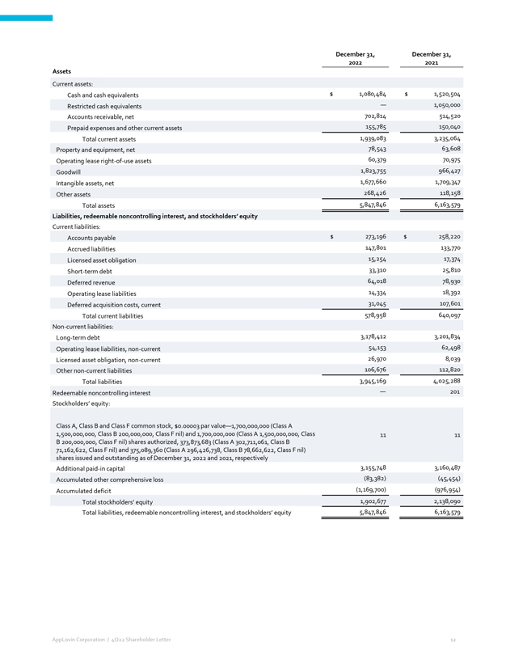
 </P> <P STYLE="font-family:Times New Roman; font-size:0.5pt"><FONT COLOR="#FFFFFF">December 31, 2022 December 31, 2021 Assets Current assets: Cash and cash equivalents $ 1,080,484 $ 1,520,504 Restricted cash equivalents
&#151; 1,050,000 Accounts receivable, net 702,814 514,520 Prepaid expenses and other current assets 155,785 150,040 Total current assets 1,939,083 3,235,064 Property and equipment, net 78,543 63,608 Operating lease <FONT STYLE="white-space:nowrap"><FONT
STYLE="white-space:nowrap">right-of-use</FONT></FONT> assets 60,379 70,975 Goodwill 1,823,755 966,427 Intangible assets, net 1,677,660 1,709,347 Other assets 268,426 118,158 Total assets 5,847,846 6,163,579 Liabilities, redeemable noncontrolling
interest, and stockholders&#146; equity Current liabilities: Accounts payable $ 273,196 $ 258,220 Accrued liabilities 147,801 133,770 Licensed asset obligation 15,254 17,374 Short-term debt 33,310 25,810 Deferred revenue 64,018 78,930 Operating
lease liabilities 14,334 18,392 Deferred acquisition costs, current 31,045 107,601 Total current liabilities 578,958 640,097 <FONT STYLE="white-space:nowrap">Non-current</FONT> liabilities: Long-term debt 3,178,412 3,201,834 Operating lease
liabilities, <FONT STYLE="white-space:nowrap">non-current</FONT> 54,153 62,498 Licensed asset obligation, <FONT STYLE="white-space:nowrap">non-current</FONT> 26,970 8,039 Other <FONT STYLE="white-space:nowrap">non-current</FONT> liabilities 106,676
112,820 Total liabilities 3,945,169 4,025,288 Redeemable noncontrolling interest &#151; 201 Stockholders&#146; equity: Class A, Class&nbsp;B and Class&nbsp;F common stock, $0.00003 par value&#151;1,700,000,000 (Class A 1,500,000,000, Class&nbsp;B
200,000,000, Class&nbsp;F nil) and 1,700,000,000 (Class A 1,500,000,000, Class&nbsp;B 200,000,000, Class&nbsp;F nil) shares authorized, 373,873,683 (Class A 302,711,061, Class&nbsp;B 71,162,622, Class&nbsp;F nil) and 375,089,360 (Class A
296,426,738, Class&nbsp;B 78,662,622, Class&nbsp;F nil) shares issued and outstanding as of December&nbsp;31, 2022 and 2021, respectively 11 11Additional <FONT STYLE="white-space:nowrap">paid-in</FONT> capital 3,155,748 3,160,487 Accumulated other
comprehensive loss (83,382) (45,454) Accumulated deficit (1,169,700) (976,954) Total stockholders&#146; equity 1,902,677 2,138,090 Total liabilities, redeemable noncontrolling interest, and stockholders&#146; equity 5,847,846 6,163,579 AppLovin
Corporation / 4Q22 Shareholder Letter 12 </FONT></P>
</DIV></Center>


<p style="margin-top:1em; margin-bottom:0em; page-break-before:always">
<HR SIZE="3" style="COLOR:#999999" WIDTH="100%" ALIGN="CENTER">

<Center><DIV STYLE="width:8.5in" align="left">
 <P STYLE="margin-top:0pt;margin-bottom:0pt" ALIGN="center">


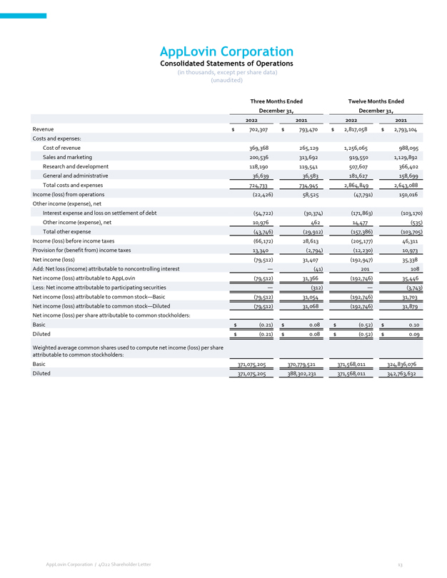
 </P> <P STYLE="font-family:Times New Roman; font-size:0.5pt"><FONT COLOR="#FFFFFF">AppLovin Corporation Consolidated Statements of Operations (in thousands, except per share data) (unaudited) Three Months Ended Twelve
Months Ended December&nbsp;31, December&nbsp;31, 2022 2021 2022 2021 Revenue $ 702,307 $ 793,470 $ 2,817,058 $ 2,793,104 Costs and expenses: Cost of revenue 369,368 265,129 1,256,065 988,095 Sales and marketing 200,536 313,692 919,550 1,129,892
Research and development 118,190 119,541 507,607 366,402 General and administrative 36,639 36,583 181,627 158,699 Total costs and expenses 724,733 734,945 2,864,849 2,643,088 Income (loss) from operations (22,426) 58,525 (47,791) 150,016 Other
income (expense), net Interest expense and loss on settlement of debt (54,722) (30,374) (171,863) (103,170) Other income (expense), net 10,976 462 14,477 (535) Total other expense (43,746) (29,912) (157,386) (103,705) Income (loss) before income
taxes (66,172) 28,613 (205,177) 46,311 Provision for (benefit from) income taxes 13,340 (2,794) (12,230) 10,973 Net income (loss) (79,512) 31,407 (192,947) 35,338 Add: Net loss (income) attributable to noncontrolling interest &#151; (41) 201 108 Net
income (loss) attributable to AppLovin (79,512) 31,366 (192,746) 35,446 Less: Net income attributable to participating securities &#151; (312) &#151; (3,743) Net income (loss) attributable to common stock&#151;Basic (79,512) 31,054 (192,746) 31,703
Net income (loss) attributable to common stock &#151;Diluted (79,512) 31,068 (192,746) 31,879 Net income (loss) per share attributable to common stockholders: Basic $ (0.21) $ 0.08 $ (0.52) $ 0.10 Diluted $ (0.21) $ 0.08 $ (0.52) $ 0.09 Weighted
average common shares used to compute net income (loss) per share attributable to common stockholders: Basic 371,075,205 370,779,521 371,568,011 324,836,076 Diluted 371,075,205 388,302,231 371,568,011 342,763,632 AppLovin Corporation / 4Q22
Shareholder Letter 13 </FONT></P>
</DIV></Center>


<p style="margin-top:1em; margin-bottom:0em; page-break-before:always">
<HR SIZE="3" style="COLOR:#999999" WIDTH="100%" ALIGN="CENTER">

<Center><DIV STYLE="width:8.5in" align="left">
 <P STYLE="margin-top:0pt;margin-bottom:0pt" ALIGN="center">


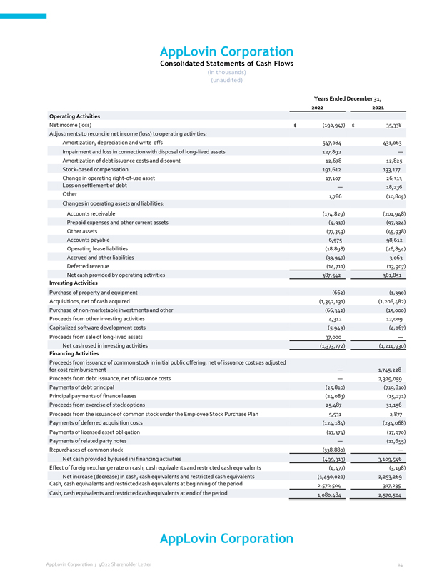
 </P> <P STYLE="font-family:Times New Roman; font-size:0.5pt"><FONT COLOR="#FFFFFF">AppLovin Corporation Consolidated Statements of Cash Flows (in thousands) (unaudited) Years Ended December&nbsp;31, 2022 2021 Operating
Activities Net income (loss) $ (192,947) $ 35,338 Adjustments to reconcile net income (loss) to operating activities: Amortization, depreciation and write-offs 547,084 431,063 Impairment and loss in connection with disposal of long-lived assets
127,892 &#151; Amortization of debt issuance costs and discount 12,678 12,825 Stock-based compensation 191,612 133,177 Change in operating <FONT STYLE="white-space:nowrap"><FONT STYLE="white-space:nowrap">right-of-use</FONT></FONT> asset 17,107
26,313 Loss on settlement of debt &#151; 18,236 Other 1,786 (10,805) Changes in operating assets and liabilities: Accounts receivable (174,829) (201,948) Prepaid expenses and other current assets (4,917) (97,324) Other assets (77,343) (45,938)
Accounts payable 6,975 98,612 Operating lease liabilities (18,898) (26,854) Accrued and other liabilities (33,947) 3,063 Deferred revenue (14,711) (13,907) Net cash provided by operating activities 387,542 361,851 Investing Activities Purchase of
property and equipment (662) (1,390) Acquisitions, net of cash acquired (1,342,131) (1,206,482) Purchase of <FONT STYLE="white-space:nowrap">non-marketable</FONT> investments and other (66,342) (15,000) Proceeds from other investing activities 4,312
12,009 Capitalized software development costs (5,949) (4,067) Proceeds from sale of long-lived assets 37,000 &#151; Net cash used in investing activities (1,373,772) (1,214,930) Financing Activities Proceeds from issuance of common stock in initial
public offering, net of issuance costs as adjusted for cost reimbursement &#151; 1,745,228 Proceeds from debt issuance, net of issuance costs &#151; 2,329,059 Payments of debt principal (25,810) (719,810) Principal payments of finance leases
(24,083) (15,271) Proceeds from exercise of stock options 25,487 31,156 Proceeds from the issuance of common stock under the Employee Stock Purchase Plan 5,531 2,877 Payments of deferred acquisition costs (124,184) (234,068) Payments of licensed
asset obligation (17,374) (17,970) Payments of related party notes &#151; (11,655) Repurchases of common stock (338,880) &#151; Net cash provided by (used in) financing activities (499,313) 3,109,546 Effect of foreign exchange rate on cash, cash
equivalents and restricted cash equivalents (4,477) (3,198) Net increase (decrease) in cash, cash equivalents and restricted cash equivalents (1,490,020) 2,253,269 Cash, cash equivalents and restricted cash equivalents at beginning of the period
2,570,504 317,235 Cash, cash equivalents and restricted cash equivalents at end of the period 1,080,484 2,570,504 AppLovin Corporation / 4Q22 Shareholder Letter 14 </FONT></P>
</DIV></Center>


<p style="margin-top:1em; margin-bottom:0em; page-break-before:always">
<HR SIZE="3" style="COLOR:#999999" WIDTH="100%" ALIGN="CENTER">

<Center><DIV STYLE="width:8.5in" align="left">
 <P STYLE="margin-top:0pt;margin-bottom:0pt" ALIGN="center">


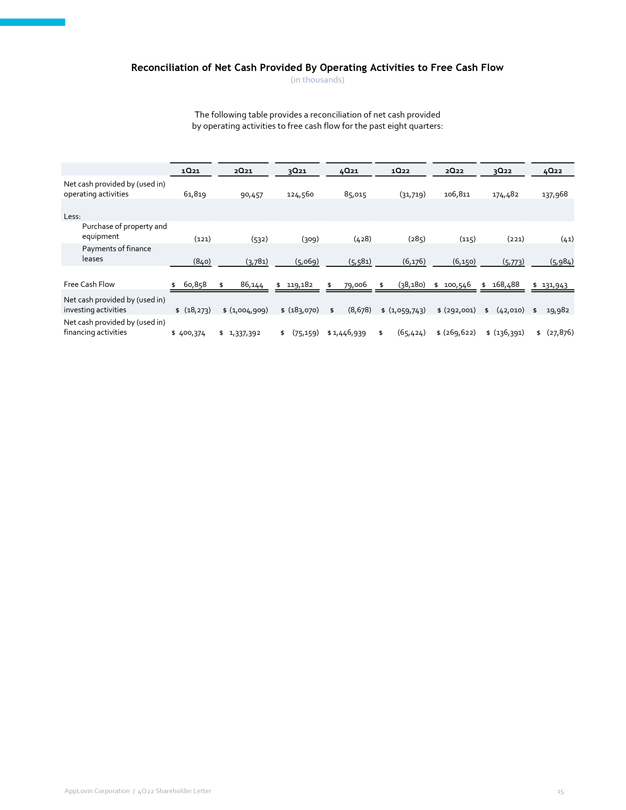
 </P> <P STYLE="font-family:Times New Roman; font-size:0.5pt"><FONT COLOR="#FFFFFF">Reconciliation of Net Cash Provided By Operating Activities to Free Cash Flow (in thousands) The following table provides a
reconciliation of net cash provided by operating activities to free cash flow for the past eight quarters: 1Q21 2Q21 3Q21 4Q21 1Q22 2Q22 3Q22 4Q22 Net cash provided by (used in) operating activities 61,819 90,457 124,560 85,015 (31,719) 106,811
174,482 137,968 Less: Purchase of property and equipment (121) (532) (309) (428) (285) (115) (221) (41) Payments of finance leases (840) (3,781) (5,069) (5,581) (6,176) (6,150) (5,773) (5,984) Free Cash Flow $ 60,858 $ 86,144 $ 119,182 $ 79,006 $
(38,180) $ 100,546 $ 168,488 $ 131,943 Net cash provided by (used in) investing activities $ (18,273) $ (1,004,909) $ (183,070) $ (8,678) $ (1,059,743) $ (292,001) $ (42,010) $ 19,982 Net cash provided by (used in) financing activities $ 400,374 $
1,337,392 $ (75,159) $ 1,446,939 $ (65,424) $ (269,622) $ (136,391) $ (27,876) AppLovin Corporation / 4Q22 Shareholder Letter 15 </FONT></P>
</DIV></Center>


<p style="margin-top:1em; margin-bottom:0em; page-break-before:always">
<HR SIZE="3" style="COLOR:#999999" WIDTH="100%" ALIGN="CENTER">

<Center><DIV STYLE="width:8.5in" align="left">
 <P STYLE="margin-top:0pt;margin-bottom:0pt" ALIGN="center">


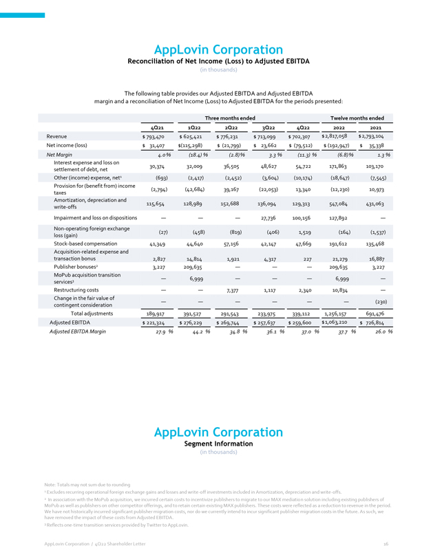
 </P> <P STYLE="font-family:Times New Roman; font-size:0.5pt"><FONT COLOR="#FFFFFF">AppLovin Corporation Reconciliation of Net Income (Loss) to Adjusted EBITDA (in thousands) The following table provides our Adjusted
EBITDA and Adjusted EBITDA margin and a reconciliation of Net Income (Loss) to Adjusted EBITDA for the periods presented: Three months ended Twelve months ended 4Q21 1Q22 2Q22 3Q22 4Q22 2022 2021Revenue $ 793,470 $ 625,421 $ 776,231 $ 713,099 $
702,307 $ 2,817,058 $ 2,793,104 Net income (loss) $ 31,407 $(115,298) $ (21,799) $ 23,662 $ (79,512) $ (192,947) $ 35,338 Net Margin 4.0&nbsp;% (18.4) % (2.8) % 3.3&nbsp;% (11.3) % (6.8) % 1.3&nbsp;% Interest expense and loss on settlement of debt,
net 30,374 32,009 36,505 48,627 54,722 171,863 103,170 Other (income) expense, net1 (693) (2,417) (2,452) (3,604) (10,174) (18,647) (7,545) Provision for (benefit from) income taxes (2,794) (42,684) 39,167 (22,053) 13,340 (12,230) 10,973
Amortization, depreciation and write-offs 115,654 128,989 152,688 136,094 129,313 547,084 431,063 Impairment and loss on dispositions &#151; &#151; &#151; 27,736 100,156 127,892 &#151; <FONT STYLE="white-space:nowrap">Non-operating</FONT> foreign
exchange loss (gain) (27) (458) (819) (406) 1,519 (164) (1,537) Stock-based compensation 41,349 44,640 57,156 42,147 47,669 191,612 135,468 Acquisition-related expense and transaction bonus 2,827 14,814 1,921 4,317 227 21,279 16,887 Publisher
bonuses2 3,227 209,635 &#151; &#151; &#151; 209,635 3,227 MoPub acquisition transition services3 &#151; 6,999 &#151; &#151; &#151; 6,999 &#151; Restructuring costs &#151; &#151; 7,377 1,117 2,340 10,834 &#151; Change in the fair value of contingent
consideration &#151; &#151; &#151; &#151; &#151; &#151; (230) Total adjustments 189,917 391,527 291,543 233,975 339,112 1,256,157 691,476 Adjusted EBITDA $ 221,324 $ 276,229 $ 269,744 $ 257,637 $ 259,600 $ 1,063,210 $ 726,814 Adjusted EBITDA Margin
27.9&nbsp;% 44.2&nbsp;% 34.8&nbsp;% 36.1&nbsp;% 37.0&nbsp;% 37.7&nbsp;% 26.0&nbsp;% AppLovin Corporation Segment Information (in thousands) Note: Totals may not sum due to rounding 1 Excludes recurring operational foreign exchange gains and losses
and <FONT STYLE="white-space:nowrap">write-off</FONT> investments included in Amortization, depreciation and write-offs. 2 In association with the MoPub acquisition, we incurred certain costs to incentivize publishers to migrate to our MAX mediation
solution including existing publishers of MoPub as well as publishers on other competitor offerings, and to retain certain existing MAX publishers. These costs were reflected as a reduction to revenue in the period. We have not historically incurred
significant publisher migration costs, nor do we currently intend to incur significant publisher migration costs in the future. As such, we have removed the impact of these costs from Adjusted EBITDA. 3 Reflects
<FONT STYLE="white-space:nowrap">one-time</FONT> transition services provided by Twitter to AppLovin. AppLovin Corporation / 4Q22 Shareholder Letter 16 </FONT></P>
</DIV></Center>


<p style="margin-top:1em; margin-bottom:0em; page-break-before:always">
<HR SIZE="3" style="COLOR:#999999" WIDTH="100%" ALIGN="CENTER">

<Center><DIV STYLE="width:8.5in" align="left">
 <P STYLE="margin-top:0pt;margin-bottom:0pt" ALIGN="center">


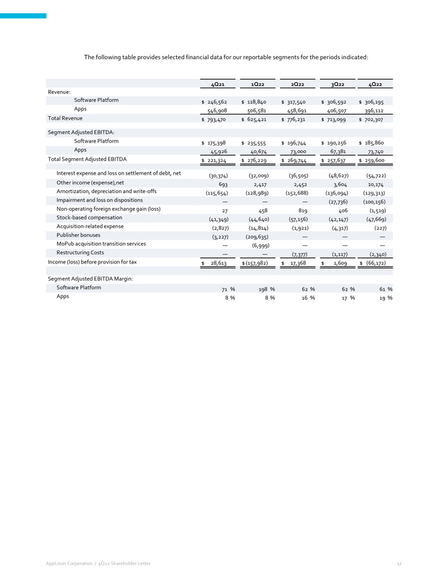
 </P> <P STYLE="font-family:Times New Roman; font-size:0.5pt"><FONT COLOR="#FFFFFF">The following table provides selected financial data for our reportable segments for the periods indicated: 4Q21 1Q22 2Q22 3Q22 4Q22
Revenue: Software Platform $ 246,562 $ 118,840 $ 317,540 $ 306,592 $ 306,195 Apps 546,908 506,581 458,691 406,507 396,112 Total Revenue $ 793,470 $ 625,421 $ 776,231 $ 713,099 $ 702,307 Segment Adjusted EBITDA: Software Platform $ 175,398 $ 235,555
$ 196,744 $ 190,256 $ 185,860 Apps 45,926 40,674 73,000 67,381 73,740 Total Segment Adjusted EBITDA $ 221,324 $ 276,229 $ 269,744 $ 257,637 $ 259,600 Interest expense and loss on settlement of debt, net (30,374) (32,009) (36,505) (48,627) (54,722)
Other income (expense),net 693 2,417 2,452 3,604 10,174 Amortization, depreciation and write-offs (115,654) (128,989) (152,688) (136,094) (129,313) Impairment and loss on dispositions &#151; &#151; &#151; (27,736) (100,156) <FONT
STYLE="white-space:nowrap">Non-operating</FONT> foreign exchange gain (loss) 27 458 819 406 (1,519) Stock-based compensation (41,349) (44,640) (57,156) (42,147) (47,669) Acquisition-related expense (2,827) (14,814) (1,921) (4,317) (227) Publisher
bonuses (3,227) (209,635) &#151; &#151; &#151; MoPub acquisition transition services &#151; (6,999) &#151; &#151; &#151; Restructuring Costs &#151; &#151; (7,377) (1,117) (2,340) Income (loss) before provision for tax $ 28,613 $ (157,982) $ 17,368 $
1,609 $ (66,172) Segment Adjusted EBITDA Margin: Software Platform 71&nbsp;% 198&nbsp;% 62&nbsp;% 62&nbsp;% 61&nbsp;% Apps 8&nbsp;% 8&nbsp;% 16&nbsp;% 17&nbsp;% 19&nbsp;% AppLovin Corporation / 4Q22 Shareholder Letter 17 </FONT></P>
</DIV></Center>


<p style="margin-top:1em; margin-bottom:0em; page-break-before:always">
<HR SIZE="3" style="COLOR:#999999" WIDTH="100%" ALIGN="CENTER">

<Center><DIV STYLE="width:8.5in" align="left">
 <P STYLE="margin-top:0pt;margin-bottom:0pt" ALIGN="center">


 </P>
</DIV></Center>

</BODY></HTML>
</TEXT>
</DOCUMENT>
